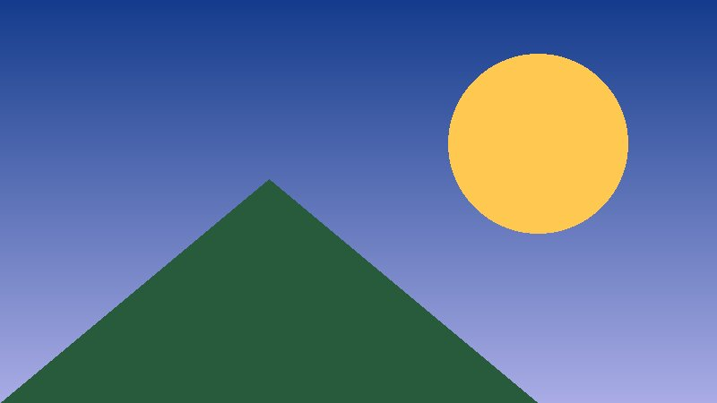
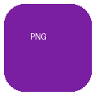

Эта страница лежит на карте как index.html и открывается сама при включении платы. Прокручивайте пальцем, нажимайте на ссылки.
код
JPEG 800×450, уменьшен под ширину экрана

PNG с прозрачностью прямо в строке текста.| Плата | Экран | Тач |
|---|---|---|
| CYD 2.4″ | 320×240 | резистивный |
| Waveshare 3.5″ | 480×320 | ёмкостный |
Простота — залог надёжности.
<meta http-equiv="refresh"
content="4; url=2.html">
Тег meta refresh сам переключает страницы — так они «проигрываются» без касаний. Полоска под заголовком показывает время до следующего слайда.
На экране платы JavaScript не выполняется. Нажмите значок Wi-Fi справа вверху: плата раздаст файлы с карты, и телефон откроет их в своём браузере со всеми скриптами и анимацией. Там же можно загрузить новые файлы на карту.
Чтобы плата подключалась к домашней сети, положите на карту файл wifi.txt: в первой строке имя сети, во второй — пароль.
Конец страницы.